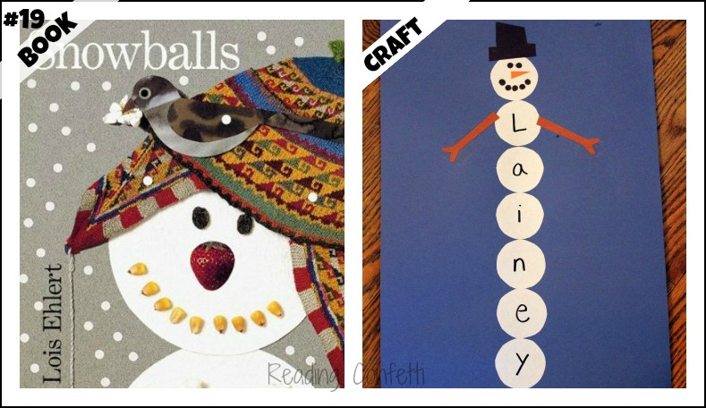
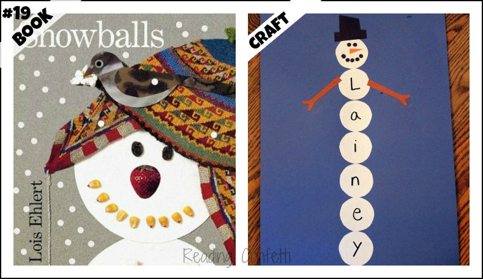
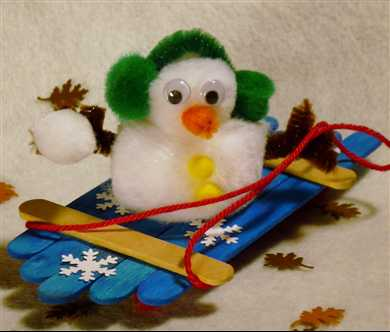
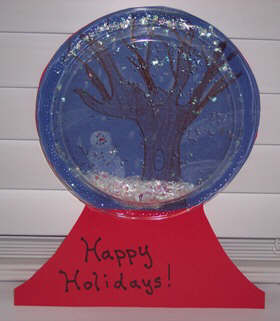
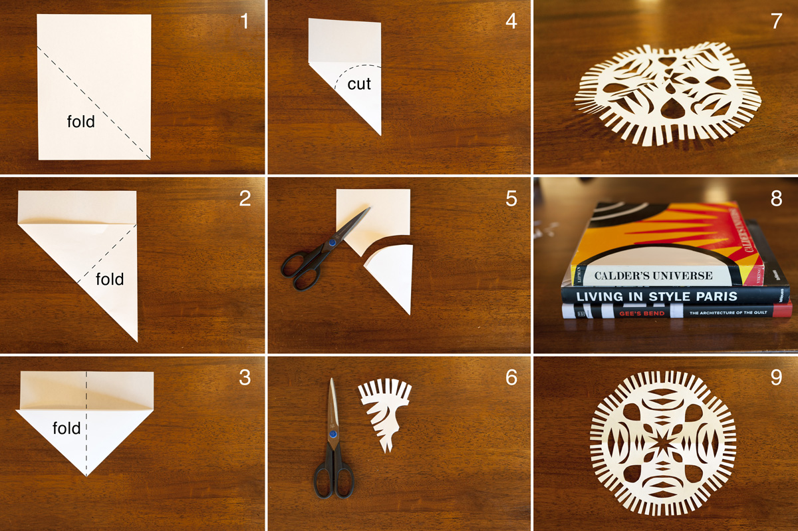
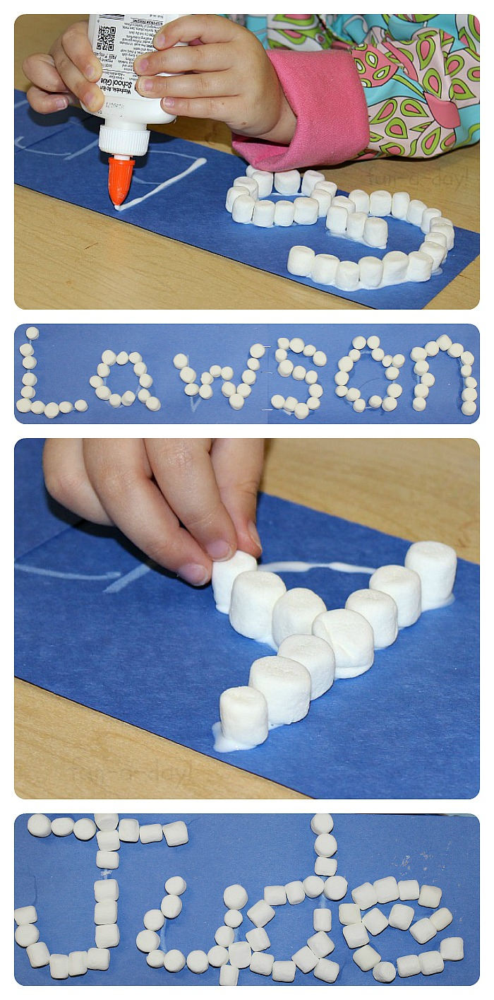

This page is for winter or christmas crafts
 

for the snowman you will need construction paper, glue, markers, and scissors

For the sleding snowman you will need popsicle sticks, pipe cleaners, and yarn

For tthe snowglobe you will need A clear plastic plate, paper, crayons, marker, and glitter

For the snow flake you will need paper and scissors

You will need paper, glue and marshmellows
These crafts are very easy for kids of all ages
Also these crafts can be made at home